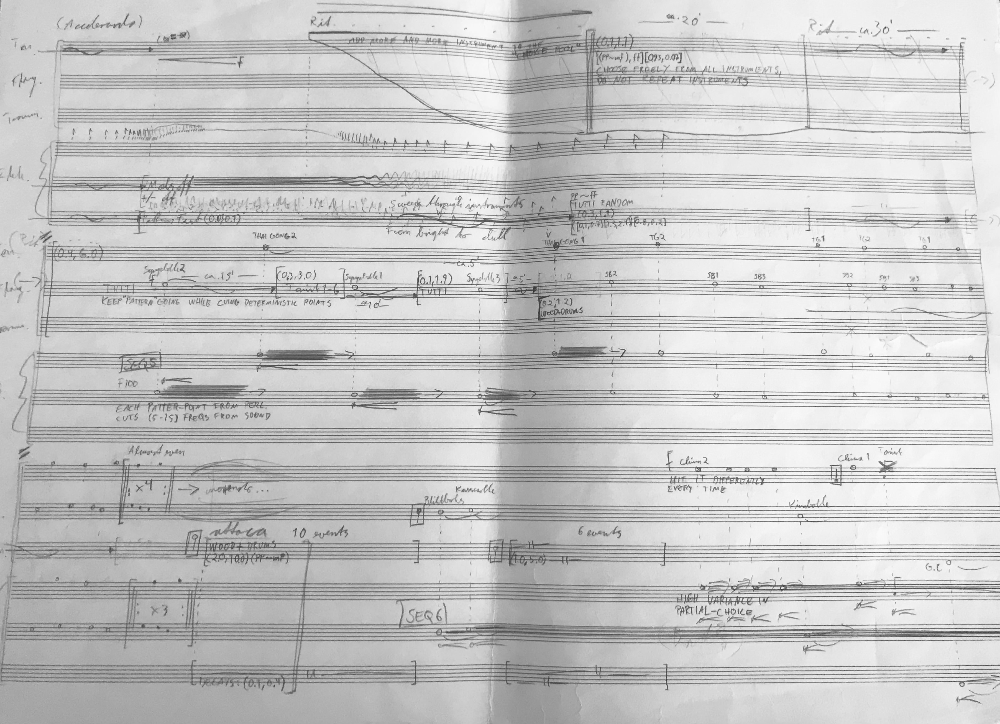

Spektralpunktilisme
Having recently completed this piece at the moment of writing this post, I look back at it as perhaps being the start of a new set of pieces related to the thematics of my Master's degree in composition that I'm starting in august 2023. This process started after I played a gig with Ensemble 3030 as a pianist in works by Norwegian composers Henrik Hellstenius and Rune Rebne. Here I met percussionist Jonas Evenstad and asked him if he wanted to work on something.
After having found a collection of instruments that we would use in the piece, we made recordings of single sounds to make spectral analyses for use in the electronics. This developed into a Supercollider class with different methods for extracting partial-data from Spear-analysis files. These classes were then used to resynthesize percussion sounds with sinetones at different "resolutions" (number of partials), transpositions, and to merge data from different sounds into a single sound.
Having previously done a number of pieces that based its structure and development from gradual, global transformations of musical material I wanted to get away from this paradigm and do something that was a bit more "random" in terms of structure. So I layed out the number of manuscript papers I would be using for the piece to get the duration I wanted and started improvising musical moments at different locations in the piece onto the paper. The idea then was that these unrelated moments would expand forward in time and eventually get close to one of the other unrelated moments, and from here I would have to synthesize them somehow. In hindsight I'm not sure how much of this "synthesizing of moments" I actually did, as I remember at least once just ereasing the upcoming moment because the developing one had such a strong drive that it couldn't be merged with the upcoming one.
At the first rehearsal after having sketched the piece out, Jonas at one point made a thinking-pose and pondered: "What is this piece about?" I'm still not sure what it's really about. For me the piece is something that "emerged" rather than something I imagined and had an idea for beforehand, just like me and Jonas' friendship and working partnership emerged out of the Ensemble 3030 gig. Then coming back to the first paragraph - this idea of "emergence" is something that I wish to explore further and try to fascilitate algorithmically as well as improvisatorically in my compositional processes. In other words try to create an interesting interplay between what is already imagined and what is unforseen, and I view this piece to be my first exploring a process that leans in this direction.